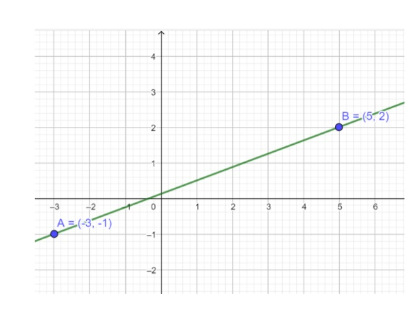
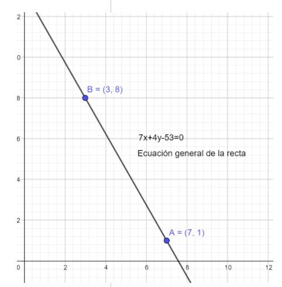

ECUACIÓN DE LA RECTA DADOS DOS PUNTOS (FORMA CARTESIANA)
La ecuación de la recta queda perfectamente determinada, cuando se conocen las coordenadas de dos cualesquiera de sus puntos.
La ecuación de la recta que pasa por dos puntos dados 𝑃1(𝑥1,𝑦1) 𝑦 𝑃2(𝑥2,𝑦2) es: (𝒚−𝒚𝟏)=𝒚𝟐−𝒚𝟏𝒙𝟐−𝒙𝟏(𝒙−𝒙𝟏)
Ejemplo 1: Encuentra la ecuación de la recta que pasa por los puntos A (-3, -1) y B (5,2)
Solución: Se toma como 𝑃1 𝑎𝑙 𝑝𝑢𝑛𝑡𝑜 𝐴 𝑦 𝑐𝑜𝑚𝑜 𝑃2 𝑎 𝑙𝑎 𝑐𝑜𝑜𝑟𝑑𝑒𝑛𝑎𝑑𝑎 𝐵 de acuerdo a esto: 𝑃1=𝐴 𝑎𝑠í 𝑞𝑢𝑒 𝒙𝟏=−𝟑 ,𝒚𝟏=−𝟏 𝑃2=𝐵 𝑎𝑠í 𝑞𝑢𝑒 𝒙𝟐=𝟓 ,𝒚𝟐=𝟐 (𝑦−𝑦1)=𝑦2−𝑦1𝑥2−𝑥1(𝑥−𝑥1)
(𝒚−(−𝟏))=𝟐−(−𝟏)𝟓−(−𝟑)(𝒙−(−𝟑)) Sustituimos en la ecuación los datos (𝑦+1)=2+15+3(𝑥+3) Realizamos las operaciones indicadas.
(𝒚+𝟏)=𝟑𝟖(𝒙+𝟑) Despejamos el 8 pasándolo multiplicando al lado izquierdo del igual (8)(𝑦+1)=(3)(𝑥+3)
Realizamos las multiplicaciones que se indican 8𝑦+8=3𝑥+9 Despejamos la “y” para escribir la ecuación común o punto – pendiente de la recta
8𝑦=3𝑥+9−8 Reducimos términos semejantes. 8𝑦=3𝑥+1 𝑦=3𝑥+18 𝑠𝑒𝑝𝑎𝑟𝑎𝑚𝑜𝑠 𝑐𝑎𝑑𝑎 𝑡𝑒𝑟𝑚𝑖𝑛𝑜 𝑦=38𝑥+18 Ecuación común o punto pendiente de la recta
Para obtener la ecuación general de la recta debemos igualar a cero la ecuación común de la recta.
𝑦=38𝑥+18𝟑𝟖𝒙−𝒚+𝟏𝟖=𝟎 Ecuación general de la recta.
Para expresar con enteros la ecuación general de la recta se multiplica por 8 ambos lados de la igualdad. (8)(38𝑥−𝑦+18)=0 (8) 248𝑥−8𝑦+88=0 Transformando las fracciones a enteros. 𝟑𝒙−𝟖𝒚+𝟏=𝟎 Ecuación general de la recta. Gráfica de la ecuación de la recta 3𝑥−8𝑦+1=0
Ejemplo 2. Encuentra la ecuación de la recta que pasa por los puntos A (7, 1) y B (3, 8)
A partir del punto A, 𝑥1=7 ,𝑦1=1
Dado el punto B, 𝑥2=3 ,𝑦2=8
Sustituimos en la ecuación: (𝒚−𝒚𝟏)=𝒚𝟐−𝒚𝟏𝒙𝟐−𝒙𝟏(𝒙−𝒙𝟏)
(𝑦−1)=8−13−7(𝑥−7) Resolver las operaciones indicadas.
(𝑦−1)=7−𝟒(𝑥−7) Despejamos el -4 de la fracción
(−4)(𝑦−1)=(7)(𝑥−7) Resolvemos las operaciones
−4𝑦+4=7𝑥−49 Despejar “y” para llegar a la ecuación común o punto pendiente de la recta
−4𝑦=7𝑥−𝟒𝟗−𝟒 Reducimos términos semejantes
−4𝑦=7𝑥−𝟓𝟑 Despejamos a la “y”
𝑦=7𝑥−53−4 Separamos cada término de esta expresión
𝑦=7−4𝑥−(53−4) 𝒚= −𝟕𝟒𝒙+𝟓𝟑𝟒 Ecuación común o punto pendiente de la recta.Igualamos a cero la ecuación común de la recta para llegar a la ecuación general de la recta. 𝒚= −𝟕𝟒𝒙+𝟓𝟑𝟒
74𝑥+𝑦−534=0 Ecuación general de la recta
Para eliminar el denominador 4, se multiplican ambos lados de la igualdad por 4. (4)(74𝑥+𝑦−534)=0(4)
284𝑥+4𝑦−2124=0 Transformamos las fracciones a enteros.
𝟕𝒙+𝟒𝒚−𝟓𝟑=𝟎 Ecuación general de la recta.
 Iniciar cuestonario